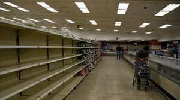

Quintus can be found at qcurtius.com. He is the author of the books On Duties, Thirty Seven, Sallust: The Conspiracy Of Catiline And The War Of Jugurtha, and other books. His work has been reviewed at Taki's Magazine. He can be followed on Twitter


You’ve probably read or heard a great deal about the incipient chaos in Venezuela. There are serious food shortages, rampant crime, seething unrest, and the threat of a violent government crackdown. And yet Venezuela has untold riches in oil. Most people are unaware that it was one of the major driving forces behind the founding of OPEC many decades ago. It used to be a stable, prosperous, and reasonably efficient state structure. How could a country with so many natural resources be unable to feed its people? What happened? How did it all unravel? And what lessons can we draw from the drama?
To blame it all on abstractions like “socialism” is too simple. We need a comprehensive, nuanced explanation of how the country was plunged into its present state. These are the major reasons:
Venezuela derived most of its income from oil exports. When things were good in the early 2000s, and oil was well over $100 per barrel, the money was rolling in. When a lot of money is sloshing around in a system, it tends to cover up problems. No one listens to critics in good times. Oil was at rock bottom during the 1990s, and then prices began to take off in the early 2000s. It’s hard to remember now, but oil actually reached $152 per barrel in 2008. Those days are now long gone.
Like the economies of some Middle Eastern countries, Venezuela was never able—or willing—to convert its oil revenues to economic diversification. A prudent leader would have seen lean times coming amidst the boom, and would have laid the foundations for economic adaptation. Natural resources never last forever. Unfortunately, none of that was done. The oil profits were squandered on Hugo Chavez’s pet projects: donating money to Cuba, giving it to his cronies and friends, or doling it out to the disenfranchised.
It’s the same old story here. Corruption is a way of life in many countries around the world: often it is just a matter of degree. But when money is rolling in, it tends to exacerbate preexisting structural weaknesses. By any measure, Hugo Chavez headed a regime that was deeply corrupt. An ex-sergeant in the Army, he staffed the key offices of the government with cronies, flunkies, yes-men, and assorted stooges who would do his bidding. Ability mattered not at all. The list of state institutions implicated in corruption is long: Corpolec (the state electricity company), CANTV (national telephone company), SENIAT (the tax authority), CADIVI (the currency control agency), and SIDOR (the steel manufacturer) are the most prominent.
Chavez was never interested in “solving” the corruption problem because he himself was the problem. This was a man who attempted to seize power unlawfully in a coup and was then sent to prison. Such men are uninterested in the rule of law and order: what matters to them is their own power and aggrandizement. The rot of corruption was so extensive that third-rate men were filling positions who had absolutely no qualifications for their posts. The results were predictable.
Working hand-in-hand with corruption was economic mismanagement. There were actually three different co-existing exchange rates in Venezuela. There was the official rate (called DiPro) used for basic imports; there was the “managed float” rate called DiCom; and then there was the underground black market rate. Experienced finance people will generally tell you that in any managed economy, the black market rate is the most honest and accurate. And when the gap between the “official rate” and the black market rate is huge, it tells people that the government is lying about the exchange rates and can’t be trusted.

How does this destroy and economy? When the black market rates are high, it encourages government officials to engage in hoarding basic foodstuffs and to trade on the black market. This sharpens food shortages and undermines faith in the economy. Businesses feel no incentive to work, since they will realize little profit. Inflation begins to creep up, and then takes off like a rocket.
Chavez foolishly left currency controls in place since the early 2000s; this caused huge gaps between the “official” exchange rates and what the average person knew was going on in the black market. If he had permitted rates to float, things might have been somewhat better, but this course of action was never considered. So why won’t the Venezuelan authorities under Maduro allow the currency to float?
The answer is simple: because too many people have too much to lose from doing so. Maduro is Chavez’s hand-picked successor. All of Chavez’s people are still embedded like parasites in the positions that matter. They have all become hugely wealthy from siphoning off the country’s oil wealth, and they are not about to change the rules of the game now. It is a depressing picture of greed and venality triumphing over public duty and moral rectitude.
Nicolas Maduro likes to blame the country’s problems on “foreign economic warfare.” By this he means the United States’s “hostile” policy towards his country. The reality is something very different. This is one case where the United States is blameless for the current crisis. It is true that President Obama in March 2015 declared that the situation in Venezuela posed an “extraordinary threat” to the security of the United States. This was hyperbole, of course, but can anyone blame the US? Chavez made a career out of pissing in Uncle Sam’s face and hugging and kissing Fidel Castro. What could he expect from the US in return? Flowers and garlands?
So when the US blackballed him from the economic system, and did all those other little things that great powers do when they want to put the screws to small countries, Chavez had only himself to blame. This is how the game is played, and bad leadership has consequences. So when Caracas whines about “economic warfare,” they are not telling the whole story. The US is certainly not doing Venezuela any favors; but then again, why should it? When you stick your finger in the eye of the cyclops, you should not expect a warm response.
A final factor in the current crisis is the opposition’s protracted battles to oust Maduro. Although it is understandable that they would want to be rid of the Chavez-era parasites, the long battle between the government and the opposition has given the government the excuse it needs to maintain a system of martial law. What will the future hold? The opinion of this writer is that things do not look good. Unless the government takes concrete steps for political and economic reform, escalating social unrest will the country’s inevitable future.
Read More: How To Maim An Attacker When Your Life Is On The Line